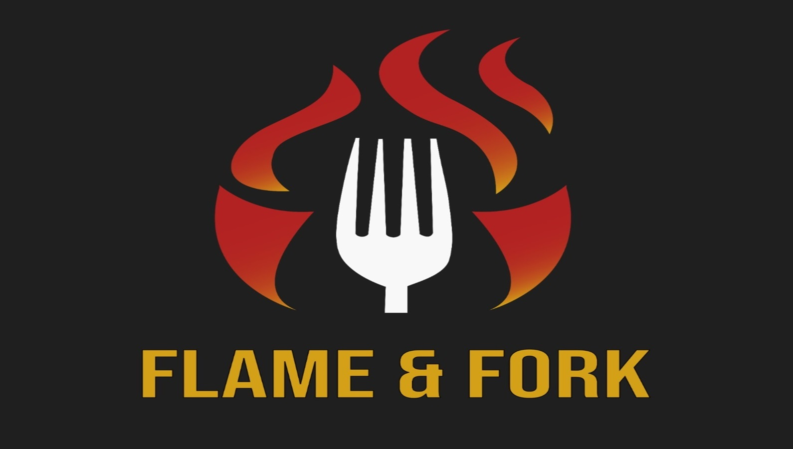
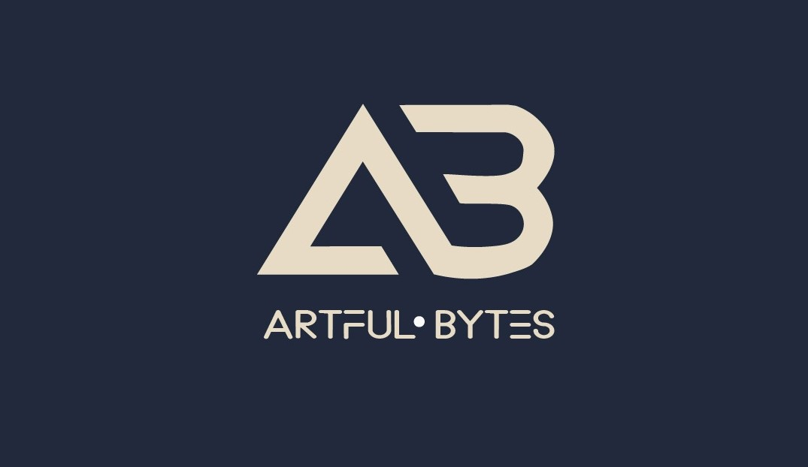
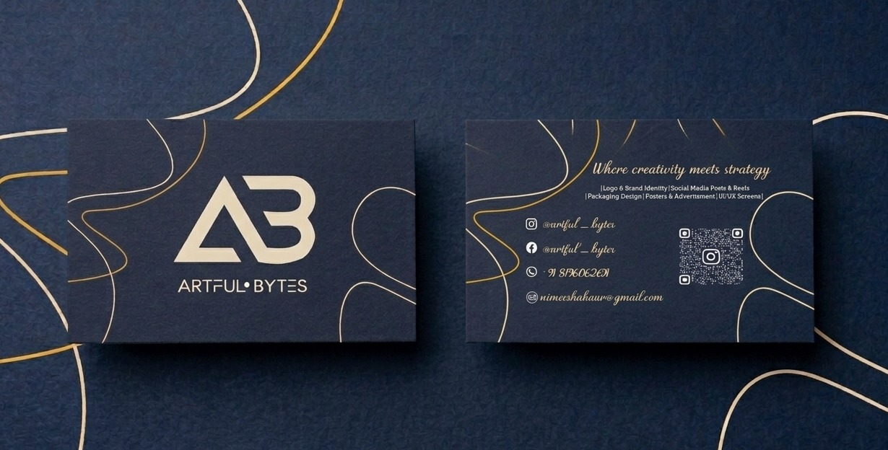

Project Gallery
Marks that
mean something.
Click any image to view full size.




Versatile, memorable logos built to last. Each mark is designed from scratch to capture a brand's personality — scalable from a favicon to a billboard, meaningful at every size. Showcasing work for Flame & Fork and Artful Bytes.
Project Gallery
Click any image to view full size.



The Brief
Every logo project starts with one question: what does this brand need to feel like? For Flame & Fork, the answer was bold, fiery, and approachable — a restaurant that takes its food seriously but welcomes everyone. The fork-through-flame mark communicates that instantly, even without the wordmark beside it.
For Artful Bytes, the brief called for a creative studio identity — sharp geometry paired with warmth. The interlocking A and B letterforms create a monogram that reads as both modern and considered, at home on a business card, a website, or a social avatar.
Both logos were delivered in full brand packages: primary mark, single-colour, reversed, and icon-only variants — ready for print, digital, and large-format use.
Project Details